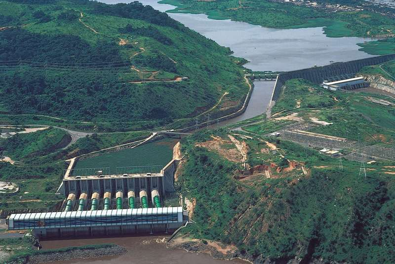
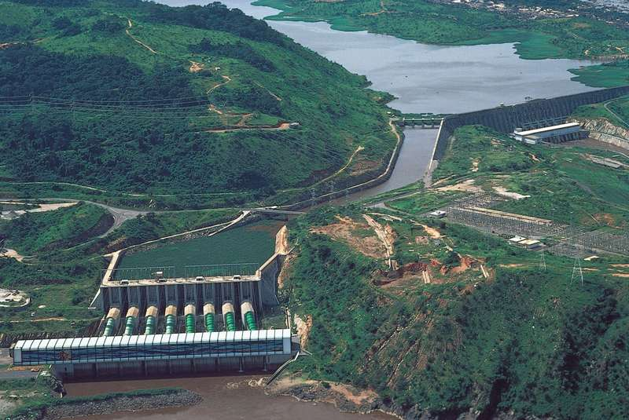

About Africa
Africa is the world's second largest continent covering about over 30 million square kilometers.
Africa is the world's second-largest and second-most populous continent, after Asia in both cases.
Africa is the world's hottest continent with deserts and drylands covering 60% of land surface area.
Africa is considered to be the second largest continent in the world with a total area of around 11 million square miles that account for 5.7% of the earth's surface as well as 20% of the total surface of land on our planet. ... Algeria is now the largest African country by geographical area.
Features of Africa
Africa has eight major physical regions: the Sahara, the Sahel, the Ethiopian Highlands, the savanna, the Swahili Coast, the rain forest, the African Great Lakes, and Southern Africa.

 Congo River
Coursing through the heart of Africa, the Congo is the continent’s second longest river, after the Nile. It is contained primarily in, or marks the border of, the Democratic Republic of the Congo. The river is approximately 2,900 miles (4,700 km) long and, with its many tributaries, forms the largest network of navigable waterways in Africa; this is in spite of the difficulty in navigating the lower course of the river, which has 32 cataracts (waterfalls). The Congo River is home to hundreds of species of fish, many of which are endemic to the river. There are few aquatic mammals in the river, but various types of reptiles, such as crocodiles, semiaquatic tortoises, and water snakes, reside there.

Congo River
Coursing through the heart of Africa, the Congo is the continent’s second longest river, after the Nile. It is contained primarily in, or marks the border of, the Democratic Republic of the Congo. The river is approximately 2,900 miles (4,700 km) long and, with its many tributaries, forms the largest network of navigable waterways in Africa; this is in spite of the difficulty in navigating the lower course of the river, which has 32 cataracts (waterfalls). The Congo River is home to hundreds of species of fish, many of which are endemic to the river. There are few aquatic mammals in the river, but various types of reptiles, such as crocodiles, semiaquatic tortoises, and water snakes, reside there.

About Ethiopia
Ethiopia, in the Horn of Africa, is a rugged, landlocked country split by the Great Rift Valley. With archaeological finds dating back more than 3 million years, it’s a place of ancient culture. Among its important sites are Lalibela with its rock-cut Christian churches from the 12th–13th centuries. Aksum is the ruins of an ancient city with obelisks, tombs, castles and Our Lady Mary of Zion church.


About kenya
Kenya is a country in East Africa with coastline on the Indian Ocean. It encompasses savannah, lakelands, the dramatic Great Rift Valley and mountain highlands. It's also home to wildlife like lions, elephants and rhinos. From Nairobi, the capital, safaris visit the Maasai Mara Reserve, known for its annual wildebeest migrations, and Amboseli National Park, offering views of Tanzania's 5,895m Mt. Kilimanjaro.